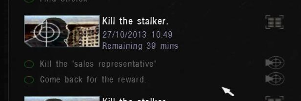

I was doing a 100% run of the game S.T.A.L.K.E.R.: Shadow Of Chernobyl with the Autumn Aurora 2.1 mod, when I started a side quest to kill the so-called "sales representative", a loner who scams others for their money. Due to him being in a more advanced area of the game at the time, I was not able to complete the quest until later on. I only then noticed, that the quest has a time limit. The quest has to be done and the award aquired in too short of a time. I started thinking about what to do: I did not want to retake the quest, but for that I would need to edit the time to finish the quest.

There is no save game editor out for this game, so we have handle this manually with the binary representation of our saves.
So our overall goal is to increase the time left. First, I looked into the game files. AA (Autumn Aurora) added a gamedata folder, in which scripts and other altered content of the game is included. First, I tried to track down the internal name of the quest, which might prove to be useful later on.
valentin@debian:.../STALKER Shadow of Chernobyl/gamedata$ grep -aiHr "sales representative"
<No result>Searching multiple other strings game me some success though, since I found the task_manager.ltx file, where all the quests and their settings are saved. But without any obvious relation to my current save. So from there, there was no way to track down the related quest.
I assumed AA mostly includes modified files from the mod, not all of the content in the game.
To overcome this, I downloaded an unpacker for the .db*-archives in the root directory of the folder:
gamedata.db0
gamedata.db1
gamedata.db2
gamedata.db3
gamedata.db4
gamedata.db5
gamedata.db6
gamedata.db7
gamedata.db8
gamedata.db9
gamedata.dba
gamedata.dbb
gamedata.dbc
gamedata.dbdThe unpacker is very self-explanatory. We choose the game directory and the output location. Using the same command from above we now get:
.../unpacked$ grep -aiHr "sales representative"
config/text/eng/stable_task_manager.xml: <text>Kill the "sales representative"</text>
config/text/eng/stable_task_manager.xml: <text>Kill the "sales representative". The trader is looking after his reputation</text>
config/text/eng/stable_task_manager.xml: <text>Imagine this: there's some weirdo running around here who introduces himself as my sales representative, uses my reputation, and then tries to hand off second-rate stuff! Broken barrells, the armor that's falling apart, expired canned goods. I've already had to deal with a few unhappy clients. Bottom line, I need a man to have a little chat with that "sales representative", whatever it takes.</text>Looking into the first result, we find the following XML entry:
<string id="tm_kill_stalker_6">
<text>Kill the "sales representative"</text>
</string>So the quest is named tm_kill_stalker_6. Looking into the task_manager.ltx file:
[tm_kill_stalker_6]
type = kill_stalker
community = actor
text = tm_kill_stalker_6_text
description = tm_kill_stalker_6_descr
parent = trader
target = sim_stalker_novice
;reward_money = 1000
reward_reputation = +3
reward_rank = 2
reward_item = af_vyvert, conserva
time = 72000
prior = 1The type attribute will prove to be successful later on, but I did not know that at the time. We can edit the quest time, but it does not affect our save, as we can see when changing it and loading the game.
The .sav files, that represent our savegames, are not very readable when read into a hex editor like HxD. To understand how the save mechanic works, we would need to disassemble the games binary. Luckily though, there do exist source code leaks of the game. We can search for the sav string to find the SAVE_EXTENSION macro, which is also used in the alife_storage_manager.cpp file. There, the CALifeStorageManager::save method is implemented.
We can assume that the method implements the save-functionality of the game. Lines that stand out are for instance:
{
CMemoryWriter stream;
header().save (stream);
time_manager().save (stream);
spawns().save (stream);
objects().save (stream);
registry().save (stream);
source_count = stream.tell();
void *source_data = stream.pointer();
dest_count = rtc_csize(source_count);
dest_data = xr_malloc(dest_count);
dest_count = rtc_compress(dest_data,dest_count,source_data,source_count);
}So the save-implementation first saves the game and all it's objects, spawns etc. into memory, compresses it and then flushes it into a .sav file. It compresses the data using the rtc_compress function:
u32 rtc_compress (void *dst, u32 dst_len, const void* src, u32 src_len)
{
u32 out_size = dst_len;
int r = lzo1x_1_compress (
(const lzo_byte *) src, (lzo_uint) src_len,
(lzo_byte *) dst, (lzo_uintp) &out_size,
rtc_wrkmem);
VERIFY (r==LZO_E_OK);
return out_size;
}We see, the compression algorithm used is LZO1X-1, where 1 is the compression level used. One tool for decompressing these files is lzop, but apparently you need a proper LZO header, which does not exist in the .sav file, when looking at it with a hex editor like HxD or xxd:
valentin@debian:~$ xxd -l 48 36.sav
00000000: ffff ffff 0300 0000 d9eb 3a00 0e00 0000 ..........:.....
00000010: 0004 0000 0003 0000 0005 0000 0010 4c00 ..............L.
00000020: 0318 ca6a 18c5 3940 010a 0020 4100 0020 ...j..9@... A.. A proper header looks like this:
(sav) valentin@debian:~$ lzop -1v 36.sav
compressing 36.sav into 36.sav.lzo
(sav) valentin@debian:~c$ xxd -l 48 36.sav.lzo
00000000: 894c 5a4f 000d 0a1a 0a10 3020 a009 4002 .LZO......0 ..@.
00000010: 0103 0000 0100 0081 ed5f 7738 6b00 0000 ........._w8k...
00000020: 0006 3336 2e73 6176 55e8 061f 0004 0000 ..36.savU.......Also standing out are the lines, in which the compressed data gets flushed into the file:
string_path temp;
FS.update_path (temp,"$game_saves$",m_save_name);
IWriter *writer = FS.w_open(temp);
writer->w_u32 (u32(-1));
writer->w_u32 (ALIFE_VERSION);
writer->w_u32 (source_count);
writer->w (dest_data,dest_count);
xr_free (dest_data);
FS.w_close (writer);Where ALIFE_VERSIOn = 0x0003. So apparently, the first 12 bytes are not LZO-data. The data corresponds to what we have read. The first 4 bytes are the u32 constant -1, which is the maximum number a u32 can be assigned to (see Two's Complement). Then the Alife version number and the decompressed size, which depends on the size of our save.
For editing the save file, we will need the following procedure:
36.sav - cut 12 bytes -> 36.sav_c
- decompress -> 36.sav_d
- edit -> 36_edited.sav_d
- compress -> 36_edited.sav_c
- append 12 bytes -> 36_edited.savWe can do the first with tail:
valentin@debian:~$ tail -c +13 36.sav > 36.sav_c
valentin@debian:~$ xxd -l 48 36.sav_c
00000000: 0e00 0000 0004 0000 0003 0000 0005 0000 ................
00000010: 0010 4c00 0318 ca6a 18c5 3940 010a 0020 ..L....j..9@...
00000020: 4100 0020 4101 0000 00c4 0e74 0000 0800 A.. A......t....For the LZO decompression: One solution might be to write a small C program that utilizes the lzo-library, which is quite easy to do. But I will use Python for this, since I want to get it done more quickly.
I will use Python 3 and the python-lzo package. On Debian based systems, one can install the C dependencies, pip and the venv package to create a virtual environment. We use a virtual environment, so that we do not affect our system wide Python installation. So to set everything up we do:
valentin@debian:~$ sudo apt install liblzo2-dev zlib1g-dev python3-pip python3-venv
valentin@debian:~$ python3 -m venv sav
valentin@debian:~$ cd sav
valentin@debian:~/sav$ source bin/activateNow for the script, we just read our savefile and output the decompressed version. It's very simple to do with Python (the complete script looks different and is attached):
save = io.open("36.sav_c", "rb")
data = save.read()
save.close()
decompressed = lzo.decompress(data, False, 3861465)
out = io.open("36.sav_d", "wb")
out.write(decompressed)
out.close()3861465 is the value of the source_data variable in the C code we saw above. It corresponds to 0x003aebd9, which is stored in Little Endian since the save was created on Windows. Now we run it:
valentin@debian:~$ chmod +x decompress.py
valentin@debian:~$ ./decompress.pyBefore continuing, I wanted to make sure the compression process will be as easy as the decompression process. So we first write a compress.py script and make sure the files are equivalent:
-rw-r--r-- 1 valentin valentin 1001317 Okt 2 14:08 36.sav_c
-rw-r--r-- 1 valentin valentin 1041563 Okt 2 15:32 36.sav_ccI will append improved versions of the Python and Shell scripts (which read the decompressed size automatically, for instance) I use to the post. The files are not equivalent. This does not necessarily mean that we can not load the game anymore though. We append the data we cut off before:
(sav) valentin@debian:~/sav$ { head -c 12 36.sav; cat 36.sav_cc; } > 36_cc.savWe load it into the game and it actually works, which is great! Now we take a look at the 36.sav_d-file which we worked so hard for. We can easily automate this process now too.
Remember the quests name we discovered? tm_kill_stalker_6 We now skim through the files, which is still in great parts binary data, but much more readable, and try to find the statistics of this running task.
My next thought was to look for the according location of "Remaining", from the above screenshot.
valentin@debian:/media/sf_D_DRIVE/unpacked$ grep -aiHr Remaining
config/text/eng/ui_st_mp.xml: <text>Time remaining: %d:%d; Agreed %.2f</text>
config/text/eng/ui_st_other.xml: <text>Remaining</text>We discover the two tags in the ui_st_other and the corresponding time locales:
<string id="ui_st_time_remains">
<text>Remaining</text>
</string><string id="ui_st_mins">
<text>mins</text>
</string>-- GREAT TILL HERE
When searching after these symbols, we discover the task class in GameTask.h:
class CGameTask
{
...
TASK_ID m_ID;
shared_str m_Title;
OBJECTIVE_VECTOR m_Objectives;
ALife::_TIME_ID m_ReceiveTime;
ALife::_TIME_ID m_FinishTime;
ALife::_TIME_ID m_TimeToComplete;
u32 m_priority;
...
};We see that it is serializable, as in it gets probably saved. The save function that saves these members is:
void SGameTaskKey::save(IWriter &stream)
{
save_data(task_id, stream);
save_data(game_task->m_ReceiveTime, stream);
save_data(game_task->m_FinishTime, stream);
save_data(game_task->m_TimeToComplete, stream);
save_data(game_task->m_Title, stream);
u32 cnt = game_task->m_Objectives.size();
save_data(cnt, stream);
OBJECTIVE_VECTOR_IT it = game_task->m_Objectives.begin();
OBJECTIVE_VECTOR_IT it_e = game_task->m_Objectives.end();
for(;it!=it_e;++it)
save_data(*it, stream);
}
NOTE:Now we know the order in which the information of objectives stored in memory! Great.
NOTE:The game implements custom write functions, inspectable inFS.h.
The value we want to manipulate is the one from m_TimeToComplete.
We search our 36.sav_d file for, for instance, the title of the quest, or a part of it. sales representative should do. There are six occurencies of that though (with a search in HxD for instance), with only one having a following description text. But this is presumably from log entries, not from actual game data:
My approach is to find either the idx, title or description values for our task and then track down the timing in the previous bytes.
The title gets set in the SetTitle_script function, which gets binded to Lua:
auto GetTitle_script() const { return m_Title.c_str(); }
void SetTitle_script(pcstr title) { m_Title = title; }module(luaState)
[
...
class_<SGameTaskObjective>("SGameTaskObjective")
.def(constructor<CGameTask*, int>())
.def("get_title", &SGameTaskObjective::GetTitle_script)
.def("set_title", &SGameTaskObjective::SetTitle_script)
...
];We take a look at the unpacked game files again. We discover the file task_manager.script by searching for the Lua function set_title. We also see that AA wrote this file in our game files too, so we inspect that one.
function CRandomTask:action_give_task(actor, npc, p1, p2)
local task = CGameTask()
-- printf("p1 = %s p2 = %s", tostring(p1), tostring(p2))
-- dbglog("task_manager.script:action_give_task(): p1 = %s p2 = %s", tostring(p1), tostring(p2))
local task_desc = self.task_info[self.task_id_by_yes_phrase_id[p2]]
task:load(task_desc.complex_type)
task:set_title(task_desc.type)
...The task_info table seems to contain all descriptions. Let us take a look at how it gets loaded:
self.task_info = {}
for i=0,n-1 do
result, id, value = self.task_ini:r_line("list",i,"","")
if not self.task_ini:section_exist(id) then
abort("There is no section [%s] in task_manager.ltx", id)
end
self.task_info[id] = {}
local curr_task_info = self.task_info[id]
...So this confirms the assumption that these descriptions get loaded from the task_manager.ltx file. For the class that gets serializes, we find the initialization of the SGameTaskObjective class from C++ below:
local objective = SGameTaskObjective(task,1)
objective:set_description(task_desc.name)
--' Тћсш№рхь ђхъѓљѓў іхыќ ътхёђр
if task_desc.target_objects ~= nil then
self.task_info[self.task_id_by_yes_phrase_id[p2]].selected_target = task_desc.target_objects[math.random(#task_desc.target_objects)]
-- printf("TARGET DEBUG INFO")
-- printf("selected = %s", tostring(self.task_info[self.task_id_by_yes_phrase_id[p2]].selected_target))
-- print_table(task_desc.target_objects)
end
...I could now reiterate the whole script, but rather than doing that I will append it to this blog post. I skimmed through it and found the string we need to search for might be:
kill_stalker_locationBut this also leads to nothing. However, I found these lines:
GetGameTasks().push_back(SGameTaskKey(t->m_ID));
GetGameTasks().back().game_task = t;
t->m_ReceiveTime = Level().GetGameTime();
t->m_TimeToComplete = t->m_ReceiveTime + timeToComplete * 1000; // ms
t->m_timer_finish = t->m_ReceiveTime + timer_ttl * 1000; // msin the GametaskManager.cpp file. My next approach is to track down this value in the hex file. For that, we must calculate the m_TimeToComplete value.
NOTE:I discovered thequest_time_factorvariable in thetask_manager.scriptfile, but it does not accomplish what we are trying to do.
To finish this off, I will now present two scripts, with which we can decompress and compress these sav files. I will also append my savegame.
Got the time changed!
Observations:
kill_stalkerkill_stalker in the hex fileTODO: Proofread this TODO: Update the code samples with code from the actual leaked SOC source 1.0004 and the mod scripts
valentin@debian:~$ xxd -l 64 -s +3855360 36_edited.sav_d.backup
003ad400: 0000 0000 6b69 6c6c 5f73 7461 6c6b 6572 ....kill_stalker
003ad410: 5f74 7261 6465 7200 f478 b50b c539 0000 _trader..x...9..
003ad420: 0000 0000 0000 0000 f45e 9518 c539 0000 .........^...9..
003ad430: 6b69 6c6c 5f73 7461 6c6b 6572 0003 0000 kill_stalker....valentin@debian:~$ xxd -l 64 -s +3855360 36_edited.sav_d.new
003ad400: 0000 0000 6b69 6c6c 5f73 7461 6c6b 6572 ....kill_stalker
003ad410: 5f74 7261 6465 7200 f478 b50b c539 0000 _trader..x...9..
003ad420: 0000 0000 0000 0000 ffff ffff c539 0000 .............9..
003ad430: 6b69 6c6c 5f73 7461 6c6b 6572 0003 0000 kill_stalker....